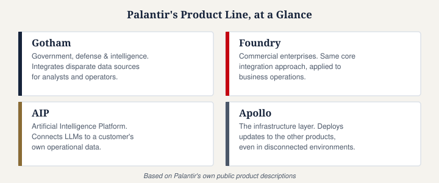

What Does Palantir Do?
Not affiliated with Palantir Technologies Inc. This page is an independent explainer based on publicly available sources.
Palantir Technologies is a publicly traded software company (NASDAQ: PLTR) that builds data-integration and analytics platforms for governments, militaries, and large corporations. In plain terms: organizations that hold huge amounts of scattered, messy data — spread across different systems, formats, and departments — use Palantir's software to pull it all into one place and make it usable for decision-making.

Where the name comes from
The company's name comes from J.R.R. Tolkien's The Lord of the Rings, where a "palantír" is a seeing-stone that lets its user view events happening far away. Palantir's founders chose the name to reflect the company's core pitch: giving an organization clearer visibility into its own data, across distance and complexity.
The three main products
Gotham was Palantir's original platform, built for government, defense, and intelligence use. It's designed to help analysts pull together disparate data sources — financial records, communications, geographic data — to support work like counterterrorism analysis and law enforcement investigations.
Foundry is Palantir's platform for commercial enterprises — manufacturers, energy companies, banks, healthcare systems. It performs a similar function to Gotham but is built for business use cases: supply chain optimization, predictive maintenance, and building "digital twins" of physical operations.
AIP (Artificial Intelligence Platform) is Palantir's newer product, layering large language models on top of a customer's existing data infrastructure so that AI tools can act on real operational data rather than generic public information.
Apollo is different from the other three — it isn't a customer-facing analytics product but the infrastructure layer underneath them. Apollo is Palantir's software deployment and management system: it continuously delivers updates to Gotham and Foundry across every environment they run in, including cloud, on-premises, air-gapped, and classified networks, without requiring manual intervention. Palantir has described Apollo as what keeps its software "continuously live, up-to-date, and consistently performing" even in disconnected or highly secured settings. Apollo is also sold as a standalone product to other companies that face the same challenge of managing software across many disconnected environments.
Who founded it, and when
Palantir was co-founded in 2003 by Peter Thiel (previously a co-founder of PayPal), along with Alex Karp, who has served as CEO. One of the company's earliest sources of funding was In-Q-Tel, the CIA's venture capital arm — reflecting Palantir's early and continued focus on government and intelligence clients.
How it makes money
Palantir's revenue comes primarily from software subscriptions rather than one-off consulting work. Customers pay to access Palantir Cloud (a hosted version of the software) or to run the software on their own infrastructure (on-premises), typically bundled with ongoing maintenance and support services. The company reports revenue across two main segments: government and commercial, and has increasingly emphasized growth in the commercial segment alongside its long-standing government business.
Is Palantir a defense contractor?
Yes, in part. Palantir holds a range of U.S. government and allied-government contracts, including with defense and intelligence agencies, and has stated that supporting military and national-security customers is a central part of its mission. It also serves civilian government agencies and a growing base of commercial clients outside the defense space — so "defense contractor" describes an important part of the business, but not the whole of it.
Have thoughts on this page? Join the discussion below, or start a new one in People's Reflections.